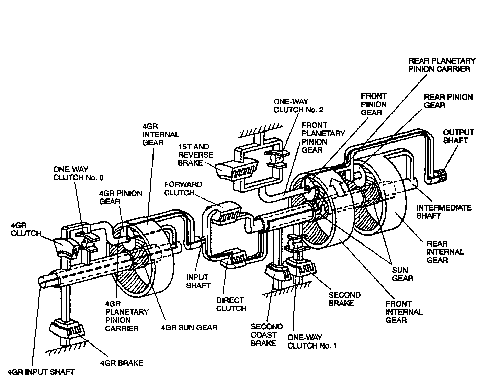
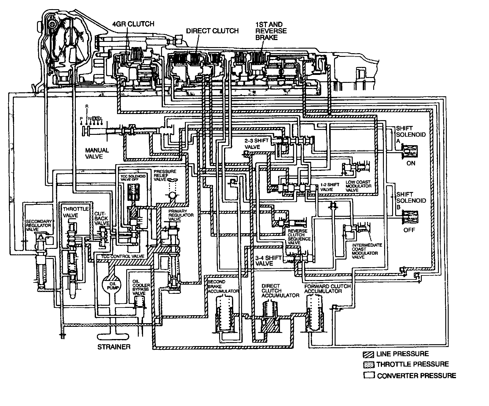
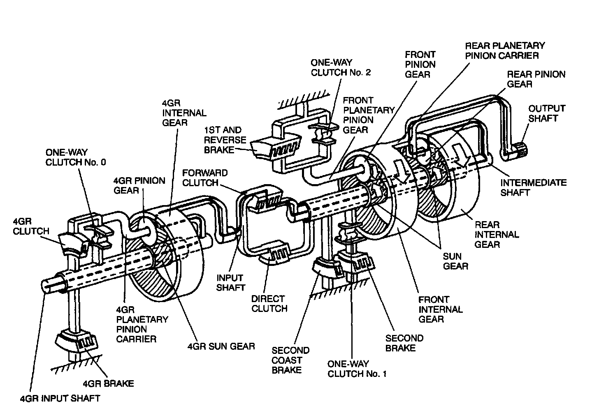
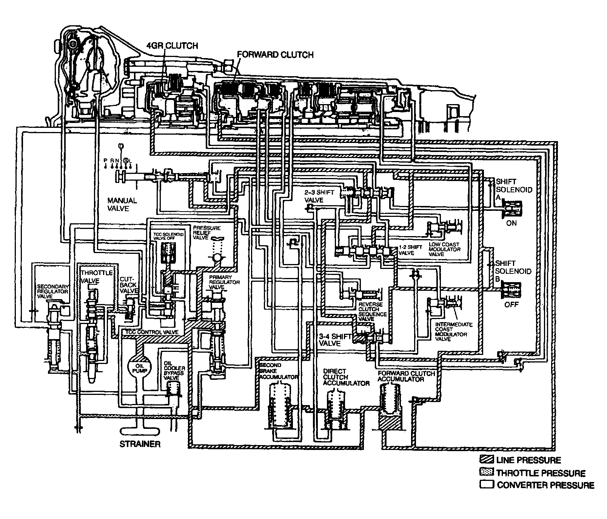
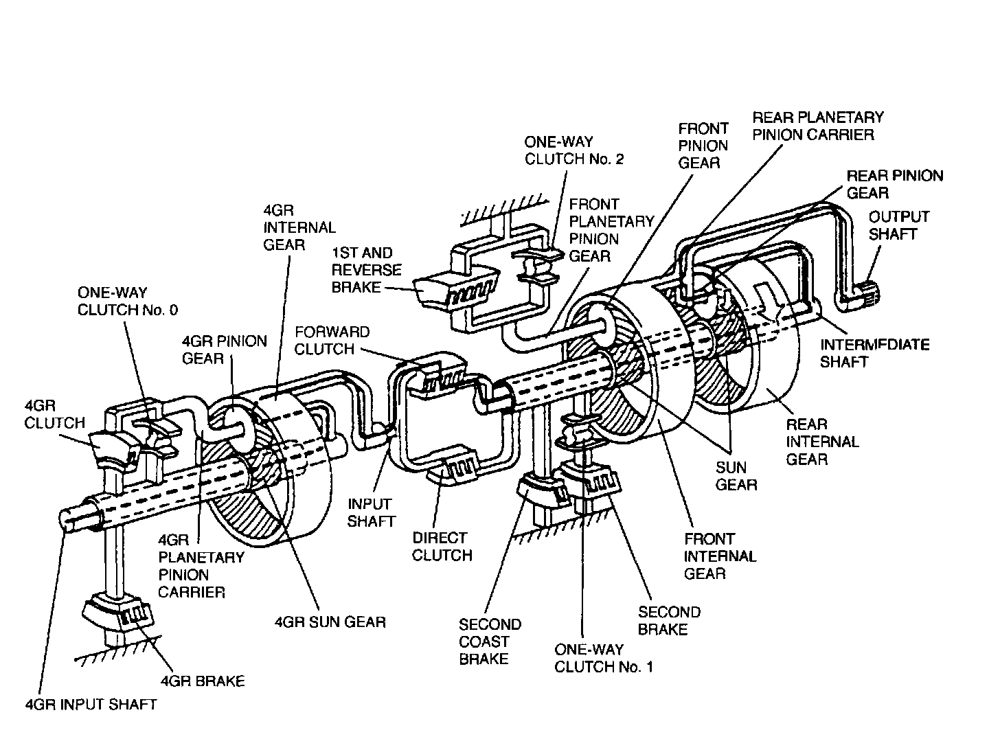
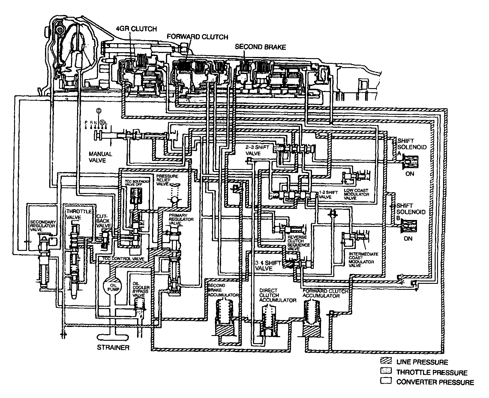
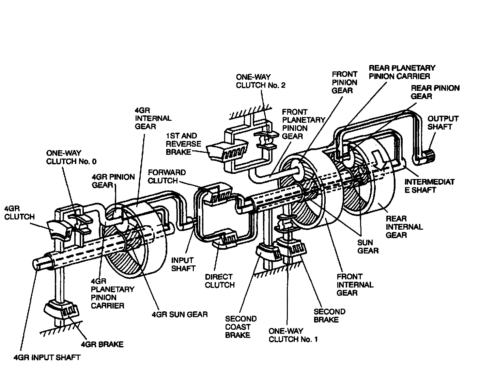
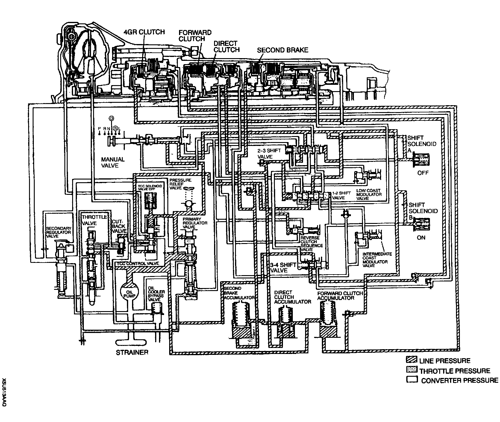
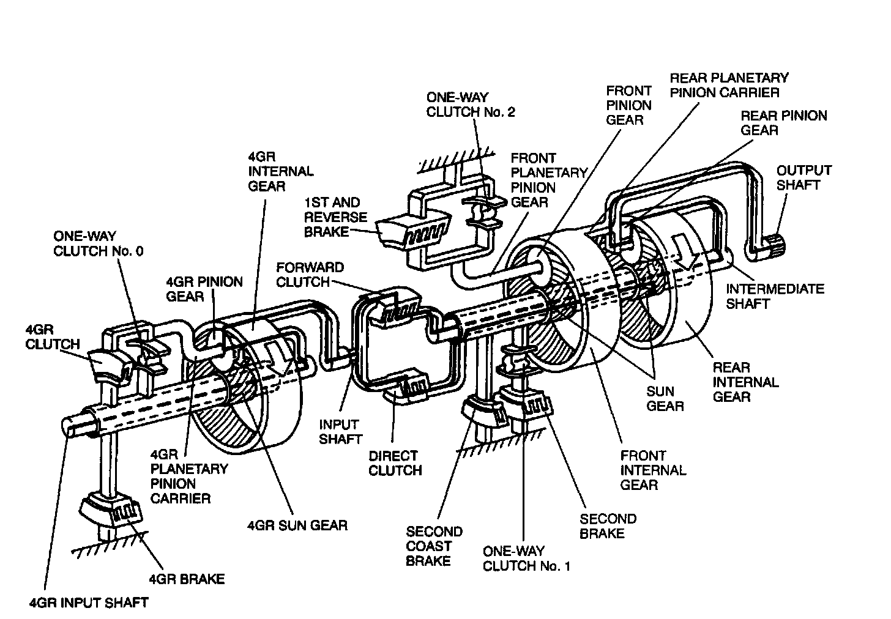
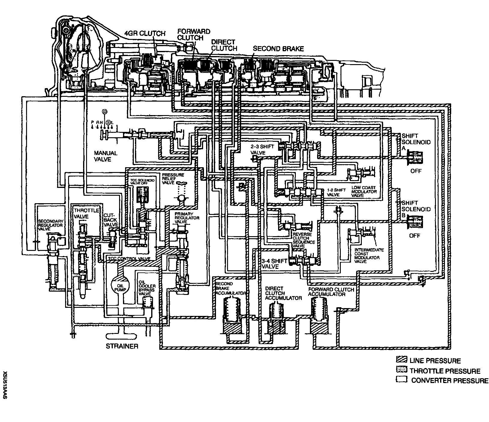

Powertrain Transmission/Hydraulic Mechanism Description
Power Transmission/Hydraulic Mechanism DescriptionR Position
Power Transmission

- The driving force of the 4GR input shaft is transmitted to the input shaft because 4GR clutch and one-way clutch No.0 are engaged, and 4GR planetary gear unit rotates as a unit.
- The driving force of the input shaft is transmitted to the sun gear through the direct clutch, causing the sun gear to rotate clockwise. The front pinion gear, however, does not revolve because the front planetary pinion carrier is locked by the reverse brake. This causes the sun gear to rotate the front planetary pinion gear counterclockwise.
- As a result, the output shaft also rotates counterclockwise, and the driving force is transmitted to the driving wheels.
Hydraulic Pressure Operation

- The line pressure flows in the manual valve and operates the 4GR clutch, direct clutch, and 1st and reverse brake.
First Gear
Power Transmission

- The driving force of the 4GR input shaft is transmitted to the input shaft because 4GR clutch and one-way clutch No.0 are engaged, and 4GR planetary gear unit rotates as a unit. The forward clutch transmits this driving force to the rear internal gear to rotate. However, the rear planetary pinion carrier, which is set together with the output shaft or the driving wheels, does not revolve because it is locked by the load when the vehicle is at a standstill. This causes the rear pinion gear to rotate clockwise.
- This rotation is transmitted to the sun gear, causing the gear to rotate counterclockwise. However, the front internal gear, which is also set together with the output shaft, does not revolve when the vehicle is at a standstill. The front pinion gear cannot revolve counterclockwise due to one-way clutch No.2 set operation, though it is going to revolve around the sun gear while it is rotating clockwise.
- As a result, the front pinion gear rotates clockwise, overcoming the load of the stopped vehicle, and rotates the front internal gear clockwise. This also causes the output shaft to rotate clockwise, and this driving force is transmitted to the driving wheels through the propeller shaft.
- During deceleration, the front pinion gear rotates at higher speed than the sun gear, causing one-way clutch No.2 to freewheel and the front planetary pinion carrier to rotate clockwise. As a result, reverse torque from the driving wheels is not transmitted to the engine, so the engine brake does not operate.
Hydraulic Pressure Operation

- The line pressure driven to the manual valve works on the forward clutch and 4GR clutch, engaging each clutch to be in first gear position. With the shift solenoid B off, the 1 - 2 shift valve is pushed to the left side, so the line pressure from the manual valve does not flow beyond the 1 - 2 shift valve.
Second Gear
Power Transmission

- The driving force of the 4GR input shaft is transmitted to the input shaft because 4GR clutch and one-way clutch No.0 are engaged, and 4GR planetary gear unit rotates as a unit. The driving force of the input shaft is transmitted to the rear internal gear through the forward clutch, causing the rear internal gear to rotate.
- This rotation is transmitted to the sun gear through the pinion gear. Though the sun gear is going to rotate counterclockwise, it cannot due to second brake set operation.
- As a result, the rear pinion gear rotates clockwise, and it rotates the rear planetary pinion carrier clockwise. The output shaft also rotates clockwise, and the driving force is transmitted to the driving wheels through the propeller shaft.
- During deceleration, the driving force is transmitted from the driving wheels, as opposed to the operation in driving. This causes the one-way clutch No.2 to freewheel. Thus the reverse torque from the driving wheels is not transmitted to the engine, and the engine brake does not operate.
Hydraulic Pressure Operation

- When the position is switched to second gear after accelerating in first gear, shift solenoid B turns on and line pressure works on the 1 - 2 shift valve. The hydraulic pressure which works on the 1 - 2 shift valve flows to the accumulator and to second brake, causing second brake to operate. The accumulator reduces shift shock generated when second brake is operated.
Third Gear
Power Transmission

- The driving force of the 4GR input shaft is transmitted to the input shaft because 4GR clutch and one-way clutch No.0 are engaged, and 4GR planetary gear unit rotates as a unit. The driving force of the input shaft is transmitted to the rear internal gear through the forward clutch, causing the rear internal gear to rotate clockwise. The force is also transmitted to the sun gear through the direct clutch, and it rotates the sun gear clockwise.
- Because the rear internal gear and the sun gear rotate in the same direction at the same time, the rear pinion gear does not rotate, causing the rear planetary pinion carrier to rotate together with the rear internal gear and the sun gear. This torque is transmitted to the driving wheels through the propeller shaft.
- During deceleration, the driving force is transmitted from the driving wheels as opposed to the operation in driving, causing the engine brake to operate.
Hydraulic Pressure Operation

- When the position is switched to third gear after accelerating in second gear, shift solenoid A turns off. Thus the hydraulic pressure works on the 2 - 3 shift valve and operates the direct clutch.
Fourth Gear
Power Transmission

- The driving force of the 4GR input shaft is transmitted to the 4GR planetary pinion carrier, causing the 4GR planetary pinion carrier to rotate clockwise. The 4GR sun gear does not rotate, locked by the 4GR brake. This causes the 4GR pinion gear to revolve and rotate clockwise, the 4GR internal gear to rotate clockwise, and the force is transmitted to the input shaft. The driving force of the input shaft is transmitted to the rear internal gear through the forward clutch, causing the rear internal gear to rotate clockwise. Also the force is transmitted to the sun gear through the direct clutch, causing the sun gear to rotate clockwise.
- Because the rear internal gear and the sun gear rotate in the same direction at the same time, the rear pinion gear does not rotate, causing the planetary pinion carrier to rotate together with the rear internal gear and the sun gear. This torque is transmitted to the driving wheels through the propeller shaft.
- During deceleration, the driving force is transmitted from the driving wheels as opposed to the operation in driving, causing the engine brake to operate.
Hydraulic Pressure Operation

- When the position is switched to fourth gear after accelerating in third gear, shift solenoid B is switched off and the line pressure works on the 3 - 4 shift valve. The hydraulic pressure which works on the 3 - 4 shift valve flows to the 4GR brake, causing the brake to operate.